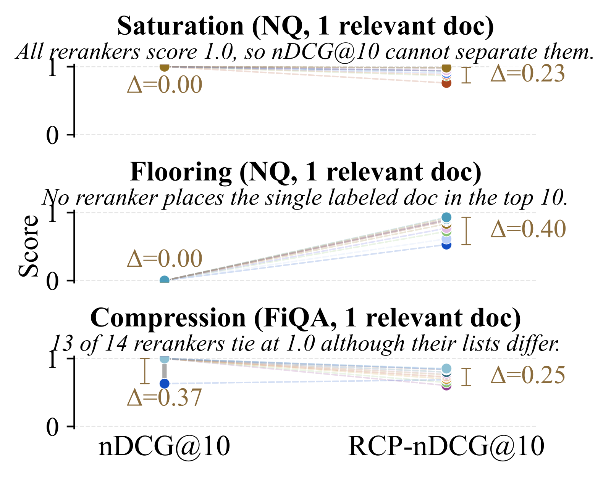
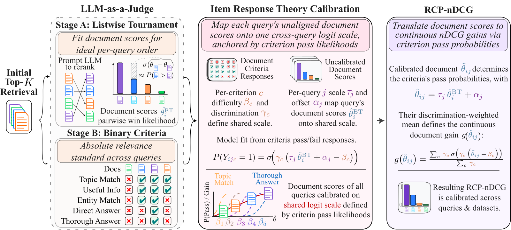
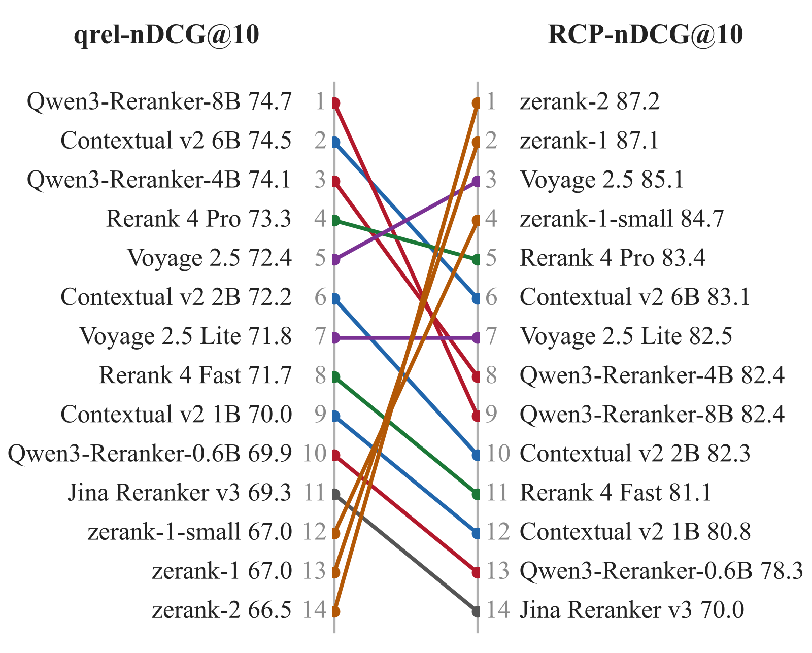

Across the 14 rerankers the authors evaluate, 45.6% of NanoBEIR queries and 30.7% of BRIGHT queries show one of nDCG's three failure modes: every reranker scores 1 (saturation), every reranker scores 0 (floor), or half or more of the pairs tie (compression). The root cause is that human relevance labels (qrels) are costly, sparse, noisy and discretely graded, and the problem worsens as rerankers converge. The Cohere authors propose RCP (Rubric-Calibrated Preferences): a listwise LLM tournament orders documents finely within each query, and a rubric of five yes/no criteria, via Item Response Theory (IRT), puts all queries on one ruler, yielding RCP-nDCG with continuous gains. Against blind grades from 46 external annotators, RCP gains rank a useful document above a non-useful one with probability 0.910, versus 0.651 for the qrels; on NanoBEIR the share of reranker pairs separated significantly rises from 34.1% to 63.5%.

1. The problem: relative judgments share no scale, absolute ones are too coarse
LLM relevance judges can label at scale with quality close to human assessors, but both kinds of judgment have a weakness. Relative judgments (pairwise or listwise comparisons) separate close documents within a query, but scores from different queries share no scale, ruling out graded labels, shared thresholds and cross-query statistics. In Bradley–Terry (BT) terms, scores within a comparison set are identified only up to an additive constant, so different queries' scores are not comparable, and their spread differs when a judge is more decisive on some queries. Absolute judgments (grades) compare across queries, but the grades are coarse and leave many documents of a query tied.
The research question is whether a fixed set of yes/no criteria can put within-query LLM preferences on a scale shared across queries, with results that agree with human judgment. The authors test it in reranking evaluation, where independent human references exist and such scores could replace sparse, discrete, noisy qrels.
2. Method: the tournament sets the order, the rubric sets the scale

IRT comes from testing: from test-takers' answers to shared questions, it places everyone on one ability scale. RCP's analogy is that documents are the test-takers and rubric criteria are the questions.
Stage A: listwise BT tournament. For each query's candidate set, listwise LLM reranking is repeated over windows of 10 documents, and the judge gives each document a score in $[-5,+5]$, which the prompt describes as a logit scale. Only the within-window soft preferences are kept, and BT scores are fit to them. A three-phase window schedule focuses comparisons on uncertain ranks and keeps mid-ranked documents away from dominant ones, which would depress their scores.
Stage B: pointwise criterion evaluation. The judge again reads 10 documents at a time but rates each on its own against an absolute standard, answering five yes/no questions of increasing difficulty:
| ID | Criterion | Diagnostic question | Discrimination γ | Difficulty β |
|---|---|---|---|---|
| C1 | Topical relevance | Is its topic clearly related to the query's information need? | 1.17 | −2.57 |
| C2 | Information utility | Does it contain specific, useful information to address the query? | 1.05 | −2.00 |
| C3 | Entity/detail match | Does it name and discuss the particular entity or detail in the query? | 0.94 | −0.25 |
| C4 | Direct answer | Does it explicitly and directly answer the query's primary question? | 1.16 | 0.71 |
| C5 | Thorough treatment | Does it treat the topic in depth rather than superficially? | 0.69 | 4.12 |
(Parameters are the NanoBEIR fit with judge Qwen3.5-397B.)
IRT calibration. BT scores and the abilities of IRT's two-parameter logistic (2PL) model both live on logit scales, so BT scores are mapped affinely to abilities:
Each criterion's discrimination and difficulty are shared across queries; each query has its own offset (fixing BT's free additive constant) and scale (so that one logit of ability means the same relevance difference on every query). and are estimated from that query's Stage B answers with BT scores held fixed, and the remaining parameters are fit by maximum a posteriori with weak priors. The calibrated ability is . Since , the within-query order always equals Stage A's (Proposition 3.1); calibration only changes how documents of different queries compare.
RCP-nDCG. nDCG's discrete gains are replaced by discrimination-weighted criterion pass probabilities:
rises smoothly from 0 to 1, fastest where the rubric measures most precisely, with slope proportional to the rubric's Fisher information. The ideal ranking is the Stage A order. On NanoBEIR, is 0.22 at C1's difficulty and 0.69 at C4's; 79.3% of pool documents lie below C1's difficulty, 15.6% in between, and 5.1% above C4's.
Illustration: for the query "can aspirin prevent stroke", two documents differ only slightly in Stage A, but both pass C1–C3; on another query, the top document passes only C1. On BT scores alone the two queries' top documents look equally "relevant"; after calibration, the former is placed at a higher ability and earns a higher gain.
3. Setup and calibration quality
Data and pools. 13 NanoBEIR datasets (649 queries) and 12 BRIGHT tasks (1,366 queries), both with binary qrels; TREC-DL 2019 and 2020 (43 and 54 queries, graded 0–3 by NIST assessors); and the 8 corpora of ViDoRe v3 (2,419 questions, three-point grades). Each query's top-150 candidates come from Reciprocal Rank Fusion of Cohere Embed v4, Octen-Embedding-8B and BM25; positives the retrievers miss replace the lowest-ranked candidates, isolating reranking from first-stage recall. The 14 rerankers come from six families: Cohere, Contextual AI, Qwen3 Embedding, Voyage AI, Jina AI and ZeroEntropy. The primary judge is Qwen3.5-397B (17B active), the second is gpt-oss-120b, and TREC-DL uses the smaller Qwen3.6-27B.
Blind human study. 46 paid external contractors, each with at least a BSc in the annotated subject. Each contest is a query plus two rerankers' top-five lists; annotators grade the union in random order without seeing list membership, qrels or scores. The analysis covers 311 contests on 292 queries, 7,080 grades and 2,268 documents, three annotators per contest.
2PL fit. Given the calibrated score, criterion answers correlate only weakly (mean absolute correlation 0.123, against 0.60 for raw answers), meeting IRT's independence assumption; criterion parameters fit on other datasets cut a held-out dataset's cross-entropy by 60.6% against per-criterion pass rates. The per-query scale varies about threefold between its 5th and 95th percentiles (0.86 to 2.72), so the scale term is needed.
Calibration. On the judge's own 486,750 answers, a BT sigmoid that ignores the query scale has ECE 0.371, while the 2PL has 0.017; against the 7,080 human grades the ECE is 0.054. The Spearman correlation between a query's mean score and its annotators' mean grade rises from 0.538 for raw BT to 0.795 after calibration. On TREC-DL, the cross-query correlation of calibrated scores with NIST grades is 0.649 and 0.595, reaching 84.4% and 80.2% of the attainable ceiling.
4. Main results: more discriminative, and correct
Label quality. Over the 2,268 human-graded documents, RCP gains rank a useful document (mean grade ≥2) above a non-useful one with probability 0.910, versus 0.651 for binary qrels, because about half such pairs share a qrel label. Annotators rate 27.8% of documents without a positive qrel as useful and 37.5% of those with one as not useful, so qrels disagree with people in both directions.
Discrimination. Measured as the share of the 91 reranker pairs a paired t-test separates: on NanoBEIR, 34.1% under qrel-nDCG@10 versus 63.5% under RCP-nDCG@10. RCP-nDCG also separates more on BRIGHT, ViDoRe v3 and both TREC-DL years, and the conclusion holds with gpt-oss-120b as judge. Count-nDCG, which uses the rubric without the tournament, separates about as many pairs, so the added separation comes mainly from the rubric; but three blind LLM judges from other families prefer RCP-nDCG's ideal top-10 over Count-nDCG's on 80.6–98.8% of queries, so the tournament handles finer differences.
Agreement with people. In the 185 contests where exactly one metric sides with the annotators, that metric is RCP-nDCG 72.4% of the time (chance about 53%, since qrel-nDCG ties more often). When RCP-nDCG's margin is 0.20 or more, the annotators' verdict matches it in 96.8% of contests, against 53.1% for qrel-nDCG at the same margin. On TREC-DL, NIST grades significantly separate only 14 pairs in 2019 and 37 in 2020; RCP-nDCG agrees with NIST on all of them while separating 60 and 70 pairs.

Rank changes and the bias concern. The largest change is ZeroEntropy: under qrel-nDCG@10, Qwen3-Reranker-8B and Contextual v2 6B lead with 74.7 and 74.5 and the three ZeroEntropy models trail (66.5–67.0); under RCP-nDCG@10, zerank-2 and zerank-1 rise from ranks 14 and 13 to 1 and 2 (87.2, 87.1). zerank trains on pairwise preferences of an LLM ensemble, so the metric could be rewarding a shared signal. The authors' test: in 66 contests where RCP-nDCG favors zerank and qrel-nDCG the other, human annotators using no LLM chose zerank 78.8% of the time; excluding zerank contests, RCP-nDCG's 72.4% agreement drops to 68.1%, still above chance.
5. How robust is the rubric
On TREC-DL the authors test the shipped rubric and 15 variants. No significantly separated reranker pair reverses unless the rubric ignores the query or puts all criteria at one end of the scale. RCP is thus not very sensitive to rubric wording, but the rubric must span difficulties from lenient to strict. The authors also note the five criteria target general-purpose retrieval, and other applications may need others.
6. Limitations and industry relevance
The authors' acknowledged limits: RCP gains and human grades value each document alone and ignore redundancy between documents (notably on multi-hop tasks like HotpotQA); both measure perceived relevance, not factual correctness; the human questions resemble the rubric by design; relevance is hard to judge consistently, and two annotators grade within one step of each other in only 77.8% of cases; LLM judges may share the evaluated rerankers' preferences, so models trained on RCP signal are best tested on other labels. There is also a conflict of interest to note: all authors were at Cohere, Cohere funded the annotation, and two of the 14 rerankers and one of the three first-stage retrievers are Cohere products.
For retrieval and RAG teams, the value is shifting evaluation from sparse human labels to labeling the candidate pool once with an LLM, then scoring any reranker at no further cost. The code, all judged scores and the 7,080 human grades are released, so once a pool is labeled, any model that reorders it can be scored without further judge calls. The authors recommend benchmarks report RCP-nDCG alongside qrel-nDCG rather than replacing it. Two practical cautions: below a margin of 0.02, agreement with humans is only 47.2%, near chance, so treat such margins as ties; and if your own reranker is distilled from LLM preferences, keep a human-judged set for cross-checking.